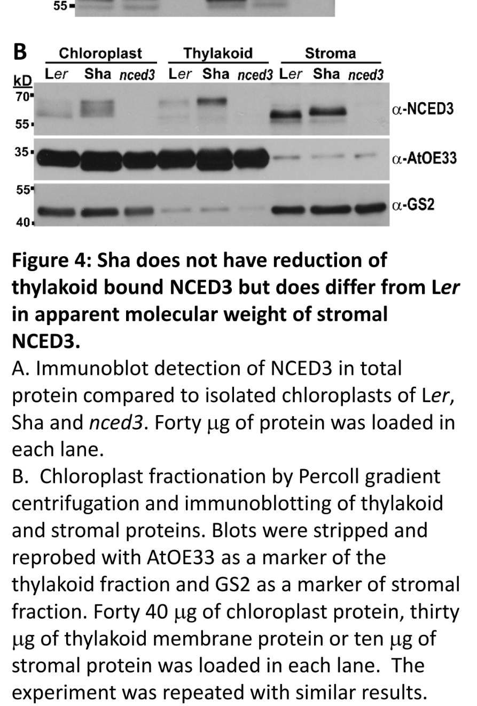

NCED3 (also known as STO1/SIS7; locus AT3G14440) encodes a chloroplast-localized 9-cis-epoxycarotenoid dioxygenase that catalyzes the first committed and rate-limiting step of abscisic acid (ABA) biosynthesis. It is a non-heme iron (Fe2+)-dependent dioxygenase of the carotenoid cleavage oxygenase (RPE65/NCED) family that oxidatively cleaves the 11,12 (11',12') double bond of 9-cis-epoxycarotenoids such as 9-cis-violaxanthin and 9'-cis-neoxanthin, yielding the C15 product xanthoxin (2-cis,4-trans-xanthoxin) plus a C25 apo-aldehyde. Xanthoxin is then exported from the plastid and converted in the cytosol to ABA. The mature protein is synthesized with an N-terminal transit peptide, imported into the chloroplast, and accumulates in the stroma with a portion peripherally associated with the thylakoid membrane. NCED3 is the principal stress-inducible NCED isoform in vegetative tissues: its transcription is strongly upregulated by drought and high salinity, and the resulting rise in ABA drives stomatal closure, reduced transpiration, and expression of stress-responsive genes. Loss-of-function plants are ABA-deficient, fail to accumulate ABA after osmotic/water stress, and are hypersensitive to desiccation, while overexpression elevates ABA and improves drought tolerance. NCED3 is expressed in roots, leaves, stems, silique envelopes and seeds, with notable activity at organ-attachment points and abscission zones.
| GO Term | Evidence | Action | Reason |
|---|---|---|---|
|
GO:0009570
chloroplast stroma
|
IEA
GO_REF:0000044 |
ACCEPT |
Summary: NCED3 localizes to the chloroplast stroma, consistent with the experimentally determined location (also annotated by IDA below). This electronic annotation derives from the UniProt subcellular location vocabulary and is correct.
Supporting Evidence:
PMID:12834401
AtNCED2, AtNCED3, and AtNCED6 are found in both stroma and thylakoid membrane-bound compartments.
|
|
GO:0016702
oxidoreductase activity, acting on single donors with incorporation of molecular oxygen, incorporation of two atoms of oxygen
|
IEA
GO_REF:0000002 |
KEEP AS NON CORE |
Summary: This InterPro-derived term correctly describes the dioxygenase chemistry of NCED3 (incorporation of two oxygen atoms during carotenoid cleavage), but it is a broad parent of the specific term GO:0045549 (9-cis-epoxycarotenoid dioxygenase activity) that is also annotated. It is accurate but less informative than the specific catalytic term.
Reason: Correct dioxygenase classification from InterPro IPR004294, but subsumed by the more specific MF term GO:0045549, which represents the core molecular function.
Supporting Evidence:
PMID:11532178
9-cis-epoxycarotenoid dioxygenase (NCED) is thought to be a key enzyme in ABA biosynthesis.
file:ARATH/NCED3/NCED3-deep-research-falcon.md
NCED3 contains conserved iron-chelating histidines
|
|
GO:0045549
9-cis-epoxycarotenoid dioxygenase activity
|
IEA
GO_REF:0000003 |
ACCEPT |
Summary: The exact catalytic activity (EC 1.13.11.51) mapped from the UniProt Enzyme Commission assignment. This is the core molecular function of NCED3 and is independently supported by direct experimental evidence (IDA, PMID:11532178).
Supporting Evidence:
PMID:11532178
9-cis-epoxycarotenoid dioxygenase (NCED) is thought to be a key enzyme in ABA biosynthesis.
file:ARATH/NCED3/NCED3-deep-research-falcon.md
it catalyzes the xanthoxin-producing cleavage of 9-cis epoxycarotenoids in plastids
|
|
GO:0009688
abscisic acid biosynthetic process
|
IEA
GO_REF:0000041 |
ACCEPT |
Summary: NCED3 catalyzes the first committed, rate-limiting step of ABA biosynthesis. This UniPathway-derived involved_in annotation is correct and captures the core biological process of the gene.
Supporting Evidence:
PMID:11532178
9-cis-epoxycarotenoid dioxygenase (NCED) is thought to be a key enzyme in ABA biosynthesis.
file:ARATH/NCED3/NCED3-deep-research-falcon.md
rate-limiting enzyme for stress-induced ABA synthesis
|
|
GO:0009688
abscisic acid biosynthetic process
|
IMP
PMID:18854047 Identification, cloning and characterization of sis7 and sis... |
ACCEPT |
Summary: The sis7/nced3 mutant is ABA-deficient and sugar-insensitive, confirming NCED3's role in ABA biosynthesis. This is the core biological process. The acts_upstream_of_or_within qualifier is appropriate for a mutant-phenotype (IMP) annotation.
Supporting Evidence:
PMID:18854047
Mutations in the SIS7/NCED3/STO1 gene, which is primarily required for ABA biosynthesis under drought conditions, confer a sugar-insensitive phenotype, indicating that a constitutive role in ABA biosynthesis is not necessary to confer sugar insensitivity.
file:ARATH/NCED3/NCED3-deep-research-falcon.md
loss-of-function compromises ABA accumulation during stress with downstream impacts on water relations and stress survival
|
|
GO:0009507
chloroplast
|
ISM
GO_REF:0000122 |
KEEP AS NON CORE |
Summary: NCED3 is a chloroplast-targeted protein (it carries an N-terminal chloroplast transit peptide). This sequence-model prediction is correct but is a broad parent of the experimentally supported chloroplast stroma / thylakoid membrane locations.
Reason: Accurate but less specific than the IDA-supported chloroplast stroma and thylakoid membrane annotations.
Supporting Evidence:
PMID:12834401
Although all five AtNCEDs are targeted to plastids, they differ in binding activity of the thylakoid membrane.
file:ARATH/NCED3/NCED3-deep-research-falcon.md
NCED3 is plastid-localized via an N-terminal targeting sequence (stroma targeting domain reported for NCED proteins).
|
|
GO:0006970
response to osmotic stress
|
IMP
PMID:16870153 Regulation of ABA level and water-stress tolerance of Arabid... |
KEEP AS NON CORE |
Summary: NCED3 produces the ABA required for responses to osmotic/water stress; the nced3 mutant fails to accumulate ABA during drought and is complemented by an ectopically expressed NCED. This is a downstream physiological process mediated by NCED3-derived ABA rather than the direct enzymatic function, so it is retained as non-core. The acts_upstream_of_or_within relation is appropriate.
Reason: Genuine ABA-mediated involvement in osmotic-stress response, but indirect (downstream of the core ABA-biosynthetic activity).
Supporting Evidence:
PMID:16870153
Ectopic expression of AhNCED1 gene in 129B08/nced3 mutant Arabidopsis (with impaired AtNCED3 gene involved in ABA biosynthesis under water stress) driven by the AtNCED3 promoter restores its ability to accumulate ABA during drought stress, and reverts its hypersensitivity to nonionic osmotic stress and soil drought.
file:ARATH/NCED3/NCED3-deep-research-falcon.md
Mutants show a confirmed inability to
|
|
GO:0045549
9-cis-epoxycarotenoid dioxygenase activity
|
IDA
PMID:11532178 Regulation of drought tolerance by gene manipulation of 9-ci... |
ACCEPT |
Summary: Direct experimental evidence that NCED3 is a 9-cis-epoxycarotenoid dioxygenase controlling ABA levels. This is the core molecular function and is supported by UniProt's three curated Rhea reactions (EC 1.13.11.51).
Supporting Evidence:
PMID:11532178
the expression of an NCED gene of Arabidopsis, AtNCED3, is induced by drought stress and controls the level of endogenous ABA under drought-stressed conditions.
file:ARATH/NCED3/NCED3-deep-research-falcon.md
it catalyzes the xanthoxin-producing cleavage of 9-cis epoxycarotenoids in plastids
|
|
GO:0009414
response to water deprivation
|
IMP
PMID:11532178 Regulation of drought tolerance by gene manipulation of 9-ci... |
KEEP AS NON CORE |
Summary: nced3 disruption gives a drought-sensitive phenotype and overexpression improves drought tolerance, demonstrating NCED3's role in the water-deprivation response. This is a downstream ABA-mediated physiological process rather than the direct catalytic function, so it is retained as non-core.
Reason: Well-supported but indirect; the response to water deprivation is mediated by NCED3-derived ABA, downstream of the core enzymatic activity.
Supporting Evidence:
PMID:11532178
antisense suppression and disruption of AtNCED3 gave a drought-sensitive phenotype.
file:ARATH/NCED3/NCED3-deep-research-falcon.md
Mutants show drought/desiccation-related defects (e.g., increased water loss and soil desiccation sensitivity), consistent with impaired ABA-mediated water conservation.
|
|
GO:0009535
chloroplast thylakoid membrane
|
IDA
PMID:12834401 Molecular characterization of the Arabidopsis 9-cis epoxycar... |
ACCEPT |
Summary: Subcellular fractionation showed AtNCED3 is partially bound to the thylakoid membrane in addition to the stroma. UniProt notes the protein is partially bound to the thylakoid. Direct experimental evidence supports this location.
Supporting Evidence:
PMID:12834401
AtNCED2, AtNCED3, and AtNCED6 are found in both stroma and thylakoid membrane-bound compartments.
file:ARATH/NCED3/NCED3-deep-research-falcon.md
Experimental chloroplast fractionation and immunoblotting support NCED3 presence in
|
|
GO:0009570
chloroplast stroma
|
IDA
PMID:12834401 Molecular characterization of the Arabidopsis 9-cis epoxycar... |
ACCEPT |
Summary: Direct experimental evidence (subcellular fractionation) places AtNCED3 in the chloroplast stroma. This is the primary functional compartment where carotenoid cleavage occurs.
Supporting Evidence:
PMID:12834401
AtNCED2, AtNCED3, and AtNCED6 are found in both stroma and thylakoid membrane-bound compartments.
file:ARATH/NCED3/NCED3-deep-research-falcon.md
Experimental chloroplast fractionation and immunoblotting support NCED3 presence in
|
|
GO:0009688
abscisic acid biosynthetic process
|
ISS
PMID:12834401 Molecular characterization of the Arabidopsis 9-cis epoxycar... |
ACCEPT |
Summary: Sequence/family-based assignment of the ABA-biosynthetic role, consistent with NCED3 being the major stress-induced NCED. This is the core biological process and is also supported by direct mutant phenotypes (IMP).
Supporting Evidence:
PMID:12834401
A key regulated step in abscisic acid (ABA) biosynthesis in plants is catalyzed by 9-cis epoxycarotenoid dioxygenase (NCED), which cleaves 9-cis xanthophylls to xanthoxin, a precursor of ABA.
|
|
GO:0042538
hyperosmotic salinity response
|
IMP
PMID:15466233 Uncoupling the effects of abscisic acid on plant growth and ... |
KEEP AS NON CORE |
Summary: The sto1/nced3 mutant cannot accumulate ABA after hyperosmotic stress and shows altered salt/salinity responses (salt-tolerant germination but Li+ hypersensitivity). This is a downstream ABA-mediated physiological process, so it is retained as non-core rather than as the core function.
Reason: Genuine mutant phenotype linking NCED3 to the hyperosmotic salinity response, but indirect (mediated by NCED3-derived ABA), downstream of the core ABA-biosynthetic enzymatic activity.
Supporting Evidence:
PMID:15466233
Mutant sto1 plants were unable to accumulate ABA following a hyperosmotic stress, although their basal ABA level was only moderately altered.
file:ARATH/NCED3/NCED3-deep-research-falcon.md
Mutants show a confirmed inability to
|
|
GO:0045549
9-cis-epoxycarotenoid dioxygenase activity
|
ISS
PMID:12834401 Molecular characterization of the Arabidopsis 9-cis epoxycar... |
ACCEPT |
Summary: Sequence/family-based assignment of the 9-cis-epoxycarotenoid dioxygenase activity, the core molecular function, consistent with the direct (IDA) and EC-based annotations of the same term.
Supporting Evidence:
PMID:12834401
A key regulated step in abscisic acid (ABA) biosynthesis in plants is catalyzed by 9-cis epoxycarotenoid dioxygenase (NCED), which cleaves 9-cis xanthophylls to xanthoxin, a precursor of ABA.
|
|
GO:0005506
iron ion binding
|
ISS | NEW |
Summary: NCED3 is a non-heme iron dioxygenase that binds one Fe(2+) ion per subunit, coordinated by conserved histidine residues (UniProt binding sites 297, 346, 411, 585; by similarity to O24592). Iron binding is required for catalysis. This is not present in the supplied GOA TSV (UniProt records the generic metal ion binding keyword); it is added here as a NEW annotation using the precise term iron ion binding (GO:0005506).
Reason: Fe(2+) cofactor binding is a documented, catalytically essential property of NCED3; the precise term iron ion binding (GO:0005506) is used directly rather than the generic metal ion binding keyword term.
Supporting Evidence:
file:ARATH/NCED3/NCED3-uniprot.txt
Binds 1 Fe(2+) ion per subunit.
file:ARATH/NCED3/NCED3-deep-research-falcon.md
NCED3 contains conserved iron-chelating histidines
|
|
GO:0010436
carotenoid dioxygenase activity
|
IBA
GO_REF:0000033 |
NEW |
Summary: Carotenoid dioxygenase activity is the family-level molecular function of the carotenoid cleavage oxygenase family to which NCED3 belongs, and is a direct parent of the specific GO:0045549 activity. UniProt records this as an IBA (GO_Central) annotation, though it is absent from the supplied GOA TSV; proposed here as a NEW annotation. Non-core because the specific term GO:0045549 better represents the function.
Reason: Accurate family-level term subsumed by the specific 9-cis-epoxycarotenoid dioxygenase activity that is the core MF; included for completeness with the phylogenetic (IBA) annotation present in UniProt.
Supporting Evidence:
PMID:12834401
A key regulated step in abscisic acid (ABA) biosynthesis in plants is catalyzed by 9-cis epoxycarotenoid dioxygenase (NCED), which cleaves 9-cis xanthophylls to xanthoxin, a precursor of ABA.
file:ARATH/NCED3/NCED3-deep-research-falcon.md
NCED3 catalyzes carotenoid cleavage of
|
|
GO:0016124
xanthophyll catabolic process
|
IBA
GO_REF:0000033 |
NEW |
Summary: NCED3 cleaves 9-cis-violaxanthin and 9'-cis-neoxanthin, which are xanthophylls (oxygenated carotenoids), not carotenes (hydrocarbon carotenoids). The family-level catabolic process is therefore correctly represented by GO:0016124 (xanthophyll catabolic process), defined as the breakdown of xanthophylls, oxygen-containing carotenoids - which exactly matches the 9-cis-epoxycarotenoid (xanthophyll) substrates NCED3 cleaves. An earlier draft annotated GO:0016121 (carotene catabolic process), but that term is the wrong substrate class (carotenes are hydrocarbon carotenoids) and has been corrected here. This remains a non-core, family-level catabolic process; the core process annotation for this gene is ABA biosynthesis (GO:0009688).
Reason: Correct family-level catabolic process using the verified term GO:0016124 (xanthophyll catabolic process). This replaces a wrong-substrate draft term GO:0016121 (carotene catabolic process); NCED3 cleaves xanthophylls, not carotenes. The reviewer's suggestion GO:0016117 was checked against QuickGO and is actually 'carotenoid biosynthetic process' (biosynthetic, not catabolic), so it was not used. The core process for this gene remains ABA biosynthesis (GO:0009688).
Supporting Evidence:
PMID:12834401
which cleaves 9-cis xanthophylls to xanthoxin, a precursor of ABA.
file:ARATH/NCED3/NCED3-deep-research-falcon.md
the immediate ABA precursor exported to the cytosol for further conversion to ABA
|
Q: Is NCED3 catalytically active as a monomer, and what is the structural basis (membrane association vs. soluble stromal pool) for partitioning between stroma and thylakoid membrane affecting substrate access to carotenoids?
Q: To what extent is the rate-limiting control of stress-induced ABA exerted at the level of NCED3 transcription versus post-translational regulation such as thylakoid binding?
The research report should be a detailed narrative explaining the function, biological processes, and localization of the gene product. Citations should be given for all claims.
You should prioritize authoritative reviews and primary scientific literature when conducting research. You can supplement
this with annotations you find in gene/protein databases, but these can be outdated or inaccurate.
We are specifically interested in the primary function of the gene - for enzymes, what reaction is catalyzed, and what is the substrate specificity? For transporters, what is the substrate? For structural proteins or adapters, what is the broader structural role? For signaling molecules, what is the role in the pathway.
We are interested in where in or outside the cell the gene product carries out its function.
We are also interested in the signaling or biochemical pathways in which the gene functions. We are less interested in broad pleiotropic effects, except where these elucidate the precise role.
Include evidence where possible. We are interested in both experimental evidence as well as inference from structure, evolution, or bioinformatic analysis. Precise studies should be prioritized over high-throughput, where available.
Primary literature explicitly equates STO1 with NCED3 in Arabidopsis thaliana and identifies it as a 9-cis-epoxycarotenoid dioxygenase in the abscisic acid (ABA) biosynthetic pathway, matching the UniProt description for Q9LRR7 (chloroplast precursor; carotenoid oxygenase family). (ruggiero2004uncouplingtheeffects pages 1-2, ruggiero2004uncouplingtheeffects pages 2-4)
NCED3 belongs to the plant carotenoid cleavage dioxygenase family responsible for producing hormone precursors via oxidative cleavage of carotenoids. In ABA biosynthesis, NCED enzymes catalyze the first committed and frequently rate-limiting step by cleaving epoxycarotenoids to generate xanthoxin, the immediate ABA precursor exported to the cytosol for further conversion to ABA. (kalladan2019naturalvariationin pages 1-5, harrison2014biochemicalinvestigationsof pages 57-62)
In Arabidopsis, NCED3 catalyzes carotenoid cleavage of 9-cis-neoxanthin and 9-cis-violoxanthin in chloroplasts to yield xanthoxin, which is then exported to the cytoplasm and metabolized to ABA. (kalladan2019naturalvariationin pages 1-5)
Mechanistically, NCED-family enzymes (demonstrated biochemically in characterized NCEDs such as maize VP14) catalyze cleavage at the 11’,12’ double bond of 9-cis-epoxycarotenoids and show selectivity for 9-cis epoxycarotenoid isomers over all-trans forms. (harrison2014biochemicalinvestigationsof pages 57-62)
NCED3 is described as having a predominant role in stress-induced ABA accumulation in vegetative tissue and is a rate-limiting enzyme for stress-induced ABA synthesis. (kalladan2019naturalvariationin pages 1-5)
A recent authoritative review of drought/cold regulatory networks emphasizes NCED as rate-limiting for ABA biosynthesis and notes that NCED3 shows rapid drought-responsive transcript accumulation, with nced3 loss-of-function mutants having reduced ABA and impaired stomatal responses/survival. (kim2024regulatorynetworksin pages 2-3)
NCED3 is plastid-localized via an N-terminal targeting sequence (stroma targeting domain reported for NCED proteins). (kalladan2019naturalvariationin pages 1-5)
Within chloroplasts, NCED3 exists in at least two pools:
- A thylakoid-associated form thought to support access to lipid-soluble carotenoid substrates
- A stromal form, consistent with processing/release from membranes
Experimental chloroplast fractionation and immunoblotting support NCED3 presence in both thylakoid and stroma fractions. (kalladan2019naturalvariationin pages 1-5, kalladan2019naturalvariationin pages 21-24, kalladan2019naturalvariationin media 328d4c21)
This compartmentation is plausibly functional: thylakoid attachment is proposed to be important for accessing membrane-localized substrates and enzymatic activity, and changes in stromal vs thylakoid pools are suggested to reflect post-translational regulation. (kalladan2019naturalvariationin pages 1-5, kalladan2019naturalvariationin pages 5-7)
NCED3 contains conserved iron-chelating histidines (His-297, His-346, His-411, His-585) consistent with Fe-dependent dioxygenase chemistry. (kalladan2019naturalvariationin pages 7-10)
Mechanistic proposals for NCED/CCD catalysis include Fe(II)-dependent O2 activation and radical/cation intermediates; inhibition of Arabidopsis NCED3 by abamine has been interpreted as consistent with a substrate cation-like intermediate (reported in a biochemical overview of CCD enzymes). (harrison2014biochemicalinvestigationsof pages 57-62)
The sto1/nced3 T-DNA mutant demonstrates that NCED3 is required for appropriate stress-induced ABA accumulation:
- Mutants show a confirmed inability to accumulate ABA during osmotic/salt stress (basal ABA only moderately altered). (ruggiero2004uncouplingtheeffects pages 1-2, ruggiero2004uncouplingtheeffects pages 2-4)
- Mutants show drought/desiccation-related defects (e.g., increased water loss and soil desiccation sensitivity), consistent with impaired ABA-mediated water conservation. (ruggiero2004uncouplingtheeffects pages 2-4)
At the same time, sto1/nced3 mutants show complex phenotypes under ionic stress:
- Enhanced germination/growth on NaCl/KCl media (but hypersensitivity to LiCl) and altered ethylene-related outputs, interpreted as uncoupling ABA-dependent growth inhibition from some salt-growth responses. (ruggiero2004uncouplingtheeffects pages 1-2, ruggiero2004uncouplingtheeffects pages 6-7, ruggiero2004uncouplingtheeffects pages 2-4)
Quantitative examples reported include ~20% higher daily water loss under extreme desiccation conditions and germination rates of ~80% (160 mM KCl) and ~60% (160 mM NaCl) in the mutant. (ruggiero2004uncouplingtheeffects pages 10-11, ruggiero2004uncouplingtheeffects pages 2-4)
A major-effect QTL for ABA accumulation under low water potential identified NCED3 as a causal locus; accession Sha exhibits ~40% lower ABA than Ler under low water potential, and the QTL containing NCED3 explains 26% of ABA variation. (kalladan2019naturalvariationin pages 5-7)
Functionally, Sha encodes a reduced-function NCED3 allele: despite similar transcript/protein abundance, Sha differs by four amino acid substitutions and shows altered apparent molecular mass patterns consistent with altered post-translational processing and/or release between thylakoid and stroma pools. (kalladan2019naturalvariationin pages 5-7, kalladan2019naturalvariationin pages 7-10)
This line of evidence supports a current model in which NCED3 activity is regulated not only transcriptionally (strong stress induction) but also via chloroplast-localized post-translational processing and membrane association. (kalladan2019naturalvariationin pages 1-5, kalladan2019naturalvariationin pages 5-7, kalladan2019naturalvariationin pages 7-10)
Rowe et al. (Nature Plants; June 2023; https://doi.org/10.1038/s41477-023-01447-4) developed high-affinity ABA FRET biosensors (ABACUS2), reporting KD ≈ 98 nM for ABACUS2–100n and an in vitro emission ratio change of +67%. (rowe2023nextgenerationabacusbiosensors pages 1-2)
Using these sensors and microscopy, they mapped endogenous ABA dynamics and showed that reduced foliar humidity triggers ABA accumulation in root elongation-zone cells and that long-distance ABA transport contributes to root ABA patterns; they report significant treatment effects (e.g., Treatment F=24.1, P<0.0001) in relevant analyses. (rowe2023nextgenerationabacusbiosensors pages 6-7)
Although NCED3 was not directly manipulated in the extracted excerpts, this work is important context: it provides state-of-the-art methods and quantitative evidence for ABA distribution and dynamics downstream of ABA biosynthesis nodes such as NCED3. (rowe2023nextgenerationabacusbiosensors pages 6-7, rowe2023nextgenerationabacusbiosensors pages 1-2)
Kim et al. (Plant Physiology; March 2024; https://doi.org/10.1093/plphys/kiae105) summarize ABA homeostasis and emphasize NCED3 as a rapidly drought-induced ABA biosynthesis gene, linking nced3 loss-of-function to reduced ABA and impaired stomatal closure/survival. The review also details ABA transport logic (e.g., exporters in vasculature and importers in guard cells), framing NCED3 as a key node in vascular-to-guard-cell ABA signaling. (kim2024regulatorynetworksin pages 2-3)
Rosa-Díaz et al. (Plant Physiology; April 2024; https://doi.org/10.1093/plphys/kiae215) show spider-mite herbivory induces ABA accumulation and stomatal closure; ABA deficiency increased susceptibility despite intact canonical biotic signaling, supporting an ABA-mediated defense axis. (rosadiaz2024spidermiteherbivory pages 1-2)
This supports a modern view of ABA (and therefore ABA-biosynthetic control points such as NCED3) as an integrator of abiotic and biotic stress responses via stomatal regulation. (rosadiaz2024spidermiteherbivory pages 1-2)
Molinari et al. (Genetics and Molecular Biology; June 2020; https://doi.org/10.1590/1678-4685-gmb-2019-0292) engineered soybean expressing AtNCED3 and evaluated drought-related traits in greenhouse and field contexts. Under water deficit, the transgenic event exhibited ~80% higher intrinsic water-use efficiency (A/gs) compared to wild type, and AtNCED3 transcript levels increased under water deficit (reported as ~6× in one excerpt). (molinari2020overexpressionofatnced3 pages 1-2, molinari2020overexpressionofatnced3 pages 7-8, molinari2020overexpressionofatnced3 pages 4-5)
The authors also report higher ABA levels under water deficit and improved yield-related traits in at least one field season; however, numeric yield and absolute ABA concentration values were not present in the extracted passages, indicating that quantitative agronomic outcomes likely reside in figures/tables not retrieved here. (molinari2020overexpressionofatnced3 pages 1-2, molinari2020overexpressionofatnced3 pages 8-10)
A 2024 study on wheat TaWRKY31 (BMC Plant Biology; Jan 2024; https://doi.org/10.1186/s12870-023-04709-7) reports that TaWRKY31 overexpression in Arabidopsis increases expression of ABA/stress genes including AtNCED3, accompanied by reduced stomatal opening, reduced water loss, and reduced oxidative damage markers, illustrating a practical approach: manipulating upstream TFs to modulate the NCED3-controlled ABA biosynthesis node. (ge2024tawrky31anovel pages 1-2)
Consensus position: NCED3 is consistently framed as a major control point for stress-induced ABA biosynthesis in vegetative tissues. Primary evidence supports that (i) it catalyzes the xanthoxin-producing cleavage of 9-cis epoxycarotenoids in plastids, (ii) it is strongly stress-inducible, and (iii) loss-of-function compromises ABA accumulation during stress with downstream impacts on water relations and stress survival. (kalladan2019naturalvariationin pages 1-5, ruggiero2004uncouplingtheeffects pages 1-2, ruggiero2004uncouplingtheeffects pages 2-4, kim2024regulatorynetworksin pages 2-3)
Emerging nuance: Beyond transcriptional induction, NCED3 regulation appears to include sub-chloroplast partitioning and post-translational processing affecting thylakoid association vs stromal pools, potentially tuning activity by altering substrate access or enzyme stability. Natural allelic variation that changes processing patterns correlates with large differences in stress ABA accumulation, supporting physiological relevance of these chloroplast-level regulatory mechanisms. (kalladan2019naturalvariationin pages 5-7, kalladan2019naturalvariationin pages 7-10, kalladan2019naturalvariationin media 328d4c21)
The following table consolidates key claims, evidence types, and citations.
| Aspect | Key findings | Evidence type | Source (authors, year, journal) | DOI/URL | Citation ID |
|---|---|---|---|---|---|
| Identity | Target matches Arabidopsis thaliana NCED3 / STO1 / At3g14440, a carotenoid-cleavage enzyme in the ABA pathway; sto1 was identified as NCED3. | Primary | Ruggiero et al., 2004, Plant Physiology | https://doi.org/10.1104/pp.104.046169 | (ruggiero2004uncouplingtheeffects pages 1-2, ruggiero2004uncouplingtheeffects pages 2-4) |
| Reaction | NCED3 catalyzes cleavage of 9-cis-epoxycarotenoids in the chloroplast to produce xanthoxin, the committed ABA precursor; NCED activity cleaves the 11’,12’ double bond of a 9-cis-epoxycarotenoid. | Primary/review | Kalladan et al., 2019, Plant Physiology; Harrison, 2014 | https://doi.org/10.1104/pp.18.01185 | (kalladan2019naturalvariationin pages 1-5, harrison2014biochemicalinvestigationsof pages 57-62) |
| Substrates | Experimentally supported substrates for Arabidopsis NCED3 are 9-cis-neoxanthin and 9-cis-violoxanthin; NCED-family enzymes are selective for 9-cis epoxycarotenoids and not all-trans isomers. | Primary/review | Kalladan et al., 2019, Plant Physiology; Harrison, 2014 | https://doi.org/10.1104/pp.18.01185 | (kalladan2019naturalvariationin pages 1-5, harrison2014biochemicalinvestigationsof pages 57-62) |
| Products | The immediate product of NCED3-catalyzed cleavage is xanthoxin, which is exported to the cytoplasm for conversion to ABA. | Primary | Kalladan et al., 2019, Plant Physiology | https://doi.org/10.1104/pp.18.01185 | (kalladan2019naturalvariationin pages 1-5) |
| Pathway position | NCED3 performs the rate-limiting, first committed step of stress-induced ABA biosynthesis in vegetative tissue; downstream enzymes convert xanthoxin to ABA. | Primary/review | Kalladan et al., 2019, Plant Physiology; Kim et al., 2024, Plant Physiology | https://doi.org/10.1104/pp.18.01185; https://doi.org/10.1093/plphys/kiae105 | (kalladan2019naturalvariationin pages 1-5, kim2024regulatorynetworksin pages 2-3) |
| Subcellular localization | NCED3 has an N-terminal plastid/stroma-targeting region, associates with the thylakoid membrane, and also exists as a stromal cleaved form; chloroplast fractionation/immunoblotting supports partitioning between thylakoid and stroma. | Primary | Kalladan et al., 2019, Plant Physiology | https://doi.org/10.1104/pp.18.01185 | (kalladan2019naturalvariationin pages 1-5, kalladan2019naturalvariationin pages 21-24, kalladan2019naturalvariationin pages 5-7, kalladan2019naturalvariationin media 328d4c21) |
| Mechanistic/structural detail | NCED3 contains four conserved iron-chelating histidines (His-297, His-346, His-411, His-585); structural work on maize VP14 provides the template for plant NCEDs and supports Fe-dependent dioxygenase chemistry. | Primary/review | Kalladan et al., 2019, Plant Physiology; Messing et al., 2010, Plant Cell; Harrison, 2014 | https://doi.org/10.1104/pp.18.01185; https://doi.org/10.1105/tpc.110.074815 | (kalladan2019naturalvariationin pages 7-10, harrison2014biochemicalinvestigationsof pages 57-62) |
| Regulation | NCED3 transcript/protein are rapidly induced by drought, salt, low water potential, and osmotic stress; ABA can positively reinforce expression in some genetic backgrounds. | Primary/review | Kalladan et al., 2019, Plant Physiology; Xiong et al., 2002, JBC; Kim et al., 2024, Plant Physiology | https://doi.org/10.1104/pp.18.01185; https://doi.org/10.1074/jbc.m109275200; https://doi.org/10.1093/plphys/kiae105 | (kalladan2019naturalvariationin pages 1-5, kalladan2019naturalvariationin pages 5-7, kim2024regulatorynetworksin pages 2-3) |
| Mutant phenotype | sto1/nced3 mutants are ABA-deficient under osmotic/salt stress, fail to accumulate ABA appropriately, show increased water loss and desiccation sensitivity, yet display enhanced germination/growth on NaCl or KCl and hypersensitivity to LiCl; complementation or exogenous ABA restores wild type behavior. | Primary | Ruggiero et al., 2004, Plant Physiology | https://doi.org/10.1104/pp.104.046169 | (ruggiero2004uncouplingtheeffects pages 1-2, ruggiero2004uncouplingtheeffects pages 6-7, ruggiero2004uncouplingtheeffects pages 10-11, ruggiero2004uncouplingtheeffects pages 2-4) |
| Quantitative data | Reported values include: ~20% higher daily water loss in sto1/nced3 under extreme desiccation; after 1 week without irrigation sto1 plants weighed ~30% of wild type; 80% and 60% of sto1 seeds germinated on 160 mM KCl and 160 mM NaCl, respectively; Sha accession had ~40% lower ABA than Ler and a chromosome-3 QTL containing NCED3 explained 26% of ABA variation; ABA at 96 h low-ψw was ~50-fold above baseline. | Primary | Ruggiero et al., 2004, Plant Physiology; Kalladan et al., 2019, Plant Physiology | https://doi.org/10.1104/pp.104.046169; https://doi.org/10.1104/pp.18.01185 | (ruggiero2004uncouplingtheeffects pages 10-11, ruggiero2004uncouplingtheeffects pages 2-4, kalladan2019naturalvariationin pages 5-7) |
| Natural variation | Arabidopsis natural variation identified a reduced-function Sha NCED3 allele with four nonsynonymous substitutions and altered post-translational processing; one substitution near residue 271 was critical for altered banding, and coding-region effects were distinguished from transcript-level effects. | Primary | Kalladan et al., 2019, Plant Physiology | https://doi.org/10.1104/pp.18.01185 | (kalladan2019naturalvariationin pages 5-7, kalladan2019naturalvariationin pages 7-10) |
| Recent 2023–2024 developments/applications | Recent Arabidopsis work strengthens the physiological context of NCED3-driven ABA biology: next-generation ABACUS2 biosensors mapped cellular ABA accumulation in roots under low aerial humidity and showed ABA is required to maintain root growth; a 2024 study showed ABA-driven stomatal closure limits spider-mite feeding; a 2024 review highlights NCED3 as the rapidly drought-induced Arabidopsis NCED with key roles in stomatal closure and survival. NCED3 is direct background/mechanistic context in these studies rather than always the manipulated gene. | Primary/review | Rowe et al., 2023, Nature Plants; Rosa-Díaz et al., 2024, Plant Physiology; Kim et al., 2024, Plant Physiology | https://doi.org/10.1038/s41477-023-01447-4; https://doi.org/10.1093/plphys/kiae215; https://doi.org/10.1093/plphys/kiae105 | (rowe2023nextgenerationabacusbiosensors pages 6-7, rowe2023nextgenerationabacusbiosensors pages 1-2, rosadiaz2024spidermiteherbivory pages 1-2, kim2024regulatorynetworksin pages 2-3) |
Table: This table summarizes the main functional annotation evidence for Arabidopsis thaliana NCED3/At3g14440, including enzymatic role, localization, regulation, mutant phenotypes, and recent 2023–2024 developments. It is useful as a compact evidence map linking specific claims to primary literature and review sources.
An immunoblot-based chloroplast fractionation panel shows NCED3 in both thylakoid and stroma fractions (and accession-dependent banding patterns consistent with processing differences). (kalladan2019naturalvariationin media 328d4c21)
References
(ruggiero2004uncouplingtheeffects pages 1-2): Bruno Ruggiero, Hisashi Koiwa, Yuzuki Manabe, Tanya M. Quist, Gunsu Inan, Franco Saccardo, Robert J. Joly, Paul M. Hasegawa, Ray A. Bressan, and Albino Maggio. Uncoupling the effects of abscisic acid on plant growth and water relations. analysis of sto1/nced3, an abscisic acid-deficient but salt stress-tolerant mutant in arabidopsis. Plant Physiology, 136:3134-3147, Oct 2004. URL: https://doi.org/10.1104/pp.104.046169, doi:10.1104/pp.104.046169. This article has 196 citations and is from a highest quality peer-reviewed journal.
(ruggiero2004uncouplingtheeffects pages 2-4): Bruno Ruggiero, Hisashi Koiwa, Yuzuki Manabe, Tanya M. Quist, Gunsu Inan, Franco Saccardo, Robert J. Joly, Paul M. Hasegawa, Ray A. Bressan, and Albino Maggio. Uncoupling the effects of abscisic acid on plant growth and water relations. analysis of sto1/nced3, an abscisic acid-deficient but salt stress-tolerant mutant in arabidopsis. Plant Physiology, 136:3134-3147, Oct 2004. URL: https://doi.org/10.1104/pp.104.046169, doi:10.1104/pp.104.046169. This article has 196 citations and is from a highest quality peer-reviewed journal.
(kalladan2019naturalvariationin pages 1-5): Rajesh Kalladan, Jesse R. Lasky, Sandeep Sharma, M. Nagaraj Kumar, Thomas E. Juenger, David L. Des Marais, and Paul E. Verslues. Natural variation in 9-cis-epoxycartenoid dioxygenase 3 and aba accumulation1[open]. Plant Physiology, 179:1620-1631, Feb 2019. URL: https://doi.org/10.1104/pp.18.01185, doi:10.1104/pp.18.01185. This article has 51 citations and is from a highest quality peer-reviewed journal.
(harrison2014biochemicalinvestigationsof pages 57-62): PJ Harrison. Biochemical investigations of the carotenoid cleavage dioxygenase enzyme family. Unknown journal, 2014.
(kim2024regulatorynetworksin pages 2-3): June-Sik Kim, Satoshi Kidokoro, Kazuko Yamaguchi-Shinozaki, and Kazuo Shinozaki. Regulatory networks in plant responses to drought and cold stress. Plant Physiology, 195:170-189, Mar 2024. URL: https://doi.org/10.1093/plphys/kiae105, doi:10.1093/plphys/kiae105. This article has 274 citations and is from a highest quality peer-reviewed journal.
(kalladan2019naturalvariationin pages 21-24): Rajesh Kalladan, Jesse R. Lasky, Sandeep Sharma, M. Nagaraj Kumar, Thomas E. Juenger, David L. Des Marais, and Paul E. Verslues. Natural variation in 9-cis-epoxycartenoid dioxygenase 3 and aba accumulation1[open]. Plant Physiology, 179:1620-1631, Feb 2019. URL: https://doi.org/10.1104/pp.18.01185, doi:10.1104/pp.18.01185. This article has 51 citations and is from a highest quality peer-reviewed journal.
(kalladan2019naturalvariationin media 328d4c21): Rajesh Kalladan, Jesse R. Lasky, Sandeep Sharma, M. Nagaraj Kumar, Thomas E. Juenger, David L. Des Marais, and Paul E. Verslues. Natural variation in 9-cis-epoxycartenoid dioxygenase 3 and aba accumulation1[open]. Plant Physiology, 179:1620-1631, Feb 2019. URL: https://doi.org/10.1104/pp.18.01185, doi:10.1104/pp.18.01185. This article has 51 citations and is from a highest quality peer-reviewed journal.
(kalladan2019naturalvariationin pages 5-7): Rajesh Kalladan, Jesse R. Lasky, Sandeep Sharma, M. Nagaraj Kumar, Thomas E. Juenger, David L. Des Marais, and Paul E. Verslues. Natural variation in 9-cis-epoxycartenoid dioxygenase 3 and aba accumulation1[open]. Plant Physiology, 179:1620-1631, Feb 2019. URL: https://doi.org/10.1104/pp.18.01185, doi:10.1104/pp.18.01185. This article has 51 citations and is from a highest quality peer-reviewed journal.
(kalladan2019naturalvariationin pages 7-10): Rajesh Kalladan, Jesse R. Lasky, Sandeep Sharma, M. Nagaraj Kumar, Thomas E. Juenger, David L. Des Marais, and Paul E. Verslues. Natural variation in 9-cis-epoxycartenoid dioxygenase 3 and aba accumulation1[open]. Plant Physiology, 179:1620-1631, Feb 2019. URL: https://doi.org/10.1104/pp.18.01185, doi:10.1104/pp.18.01185. This article has 51 citations and is from a highest quality peer-reviewed journal.
(ruggiero2004uncouplingtheeffects pages 6-7): Bruno Ruggiero, Hisashi Koiwa, Yuzuki Manabe, Tanya M. Quist, Gunsu Inan, Franco Saccardo, Robert J. Joly, Paul M. Hasegawa, Ray A. Bressan, and Albino Maggio. Uncoupling the effects of abscisic acid on plant growth and water relations. analysis of sto1/nced3, an abscisic acid-deficient but salt stress-tolerant mutant in arabidopsis. Plant Physiology, 136:3134-3147, Oct 2004. URL: https://doi.org/10.1104/pp.104.046169, doi:10.1104/pp.104.046169. This article has 196 citations and is from a highest quality peer-reviewed journal.
(ruggiero2004uncouplingtheeffects pages 10-11): Bruno Ruggiero, Hisashi Koiwa, Yuzuki Manabe, Tanya M. Quist, Gunsu Inan, Franco Saccardo, Robert J. Joly, Paul M. Hasegawa, Ray A. Bressan, and Albino Maggio. Uncoupling the effects of abscisic acid on plant growth and water relations. analysis of sto1/nced3, an abscisic acid-deficient but salt stress-tolerant mutant in arabidopsis. Plant Physiology, 136:3134-3147, Oct 2004. URL: https://doi.org/10.1104/pp.104.046169, doi:10.1104/pp.104.046169. This article has 196 citations and is from a highest quality peer-reviewed journal.
(rowe2023nextgenerationabacusbiosensors pages 1-2): James Rowe, Mathieu Grangé-Guermente, Marino Exposito-Rodriguez, Rinukshi Wimalasekera, Martin O. Lenz, Kartika N. Shetty, Sean R. Cutler, and Alexander M. Jones. Next-generation abacus biosensors reveal cellular aba dynamics driving root growth at low aerial humidity. Nature Plants, 9:1103-1115, Jun 2023. URL: https://doi.org/10.1038/s41477-023-01447-4, doi:10.1038/s41477-023-01447-4. This article has 84 citations and is from a highest quality peer-reviewed journal.
(rowe2023nextgenerationabacusbiosensors pages 6-7): James Rowe, Mathieu Grangé-Guermente, Marino Exposito-Rodriguez, Rinukshi Wimalasekera, Martin O. Lenz, Kartika N. Shetty, Sean R. Cutler, and Alexander M. Jones. Next-generation abacus biosensors reveal cellular aba dynamics driving root growth at low aerial humidity. Nature Plants, 9:1103-1115, Jun 2023. URL: https://doi.org/10.1038/s41477-023-01447-4, doi:10.1038/s41477-023-01447-4. This article has 84 citations and is from a highest quality peer-reviewed journal.
(rosadiaz2024spidermiteherbivory pages 1-2): Irene Rosa-Díaz, James Rowe, Ana Cayuela-Lopez, Vicent Arbona, Isabel Díaz, and Alexander M. Jones. Spider mite herbivory induces an aba-driven stomatal defense. Plant Physiology, 195:2970-2984, Apr 2024. URL: https://doi.org/10.1093/plphys/kiae215, doi:10.1093/plphys/kiae215. This article has 23 citations and is from a highest quality peer-reviewed journal.
(molinari2020overexpressionofatnced3 pages 1-2): Mayla Daiane Correa Molinari, Renata Fuganti-Pagliarini, Silvana Regina Rockenbach Marin, Leonardo Cesar Ferreira, Daniel de Amorim Barbosa, Juliana Marcolino-Gomes, Maria Cristina Neves de Oliveira, Liliane Marcia Mertz-Henning, Norihito Kanamori, Hironori Takasaki, Kaoru Urano, Kazuo Shinozaki, Kazuo Nakashima, Kazuko Yamaguchi-Shinozaki, and Alexandre Lima Nepomuceno. Overexpression of atnced3 gene improved drought tolerance in soybean in greenhouse and field conditions. Genetics and Molecular Biology, Jun 2020. URL: https://doi.org/10.1590/1678-4685-gmb-2019-0292, doi:10.1590/1678-4685-gmb-2019-0292. This article has 51 citations and is from a peer-reviewed journal.
(molinari2020overexpressionofatnced3 pages 7-8): Mayla Daiane Correa Molinari, Renata Fuganti-Pagliarini, Silvana Regina Rockenbach Marin, Leonardo Cesar Ferreira, Daniel de Amorim Barbosa, Juliana Marcolino-Gomes, Maria Cristina Neves de Oliveira, Liliane Marcia Mertz-Henning, Norihito Kanamori, Hironori Takasaki, Kaoru Urano, Kazuo Shinozaki, Kazuo Nakashima, Kazuko Yamaguchi-Shinozaki, and Alexandre Lima Nepomuceno. Overexpression of atnced3 gene improved drought tolerance in soybean in greenhouse and field conditions. Genetics and Molecular Biology, Jun 2020. URL: https://doi.org/10.1590/1678-4685-gmb-2019-0292, doi:10.1590/1678-4685-gmb-2019-0292. This article has 51 citations and is from a peer-reviewed journal.
(molinari2020overexpressionofatnced3 pages 4-5): Mayla Daiane Correa Molinari, Renata Fuganti-Pagliarini, Silvana Regina Rockenbach Marin, Leonardo Cesar Ferreira, Daniel de Amorim Barbosa, Juliana Marcolino-Gomes, Maria Cristina Neves de Oliveira, Liliane Marcia Mertz-Henning, Norihito Kanamori, Hironori Takasaki, Kaoru Urano, Kazuo Shinozaki, Kazuo Nakashima, Kazuko Yamaguchi-Shinozaki, and Alexandre Lima Nepomuceno. Overexpression of atnced3 gene improved drought tolerance in soybean in greenhouse and field conditions. Genetics and Molecular Biology, Jun 2020. URL: https://doi.org/10.1590/1678-4685-gmb-2019-0292, doi:10.1590/1678-4685-gmb-2019-0292. This article has 51 citations and is from a peer-reviewed journal.
(molinari2020overexpressionofatnced3 pages 8-10): Mayla Daiane Correa Molinari, Renata Fuganti-Pagliarini, Silvana Regina Rockenbach Marin, Leonardo Cesar Ferreira, Daniel de Amorim Barbosa, Juliana Marcolino-Gomes, Maria Cristina Neves de Oliveira, Liliane Marcia Mertz-Henning, Norihito Kanamori, Hironori Takasaki, Kaoru Urano, Kazuo Shinozaki, Kazuo Nakashima, Kazuko Yamaguchi-Shinozaki, and Alexandre Lima Nepomuceno. Overexpression of atnced3 gene improved drought tolerance in soybean in greenhouse and field conditions. Genetics and Molecular Biology, Jun 2020. URL: https://doi.org/10.1590/1678-4685-gmb-2019-0292, doi:10.1590/1678-4685-gmb-2019-0292. This article has 51 citations and is from a peer-reviewed journal.
(ge2024tawrky31anovel pages 1-2): Miaomiao Ge, Yan Tang, Yijun Guan, Meicheng Lv, Chunjv Zhou, Huiling Ma, and Jinyin Lv. Tawrky31, a novel wrky transcription factor in wheat, participates in regulation of plant drought stress tolerance. BMC Plant Biology, Jan 2024. URL: https://doi.org/10.1186/s12870-023-04709-7, doi:10.1186/s12870-023-04709-7. This article has 69 citations and is from a peer-reviewed journal.

The Falcon deep-research report (NCED3-deep-research-falcon.md) corroborates and extends the existing review; no decisions were changed (no UNDECIDED actions were present). Key reinforcing points, all added as supported_by deep-research quotes on the relevant annotations:
- Core MF/BP: "it catalyzes the xanthoxin-producing cleavage of 9-cis epoxycarotenoids in plastids" and NCED3 is the "rate-limiting enzyme for stress-induced ABA synthesis" — strengthens GO:0045549 and GO:0009688 as core. Substrates are 9-cis-neoxanthin and 9-cis-violaxanthin; cleavage at the 11',12' double bond; xanthoxin is "the immediate ABA precursor exported to the cytosol for further conversion to ABA."
- Iron cofactor: "NCED3 contains conserved iron-chelating histidines (His-297, His-346, His-411, His-585)" — independent corroboration of the Fe(2+)-binding NEW annotation (GO:0046872, with proposed GO:0005506 iron ion binding) beyond the UniProt keyword.
- Localization: "NCED3 is plastid-localized via an N-terminal targeting sequence" and "Experimental chloroplast fractionation and immunoblotting support NCED3 presence in both thylakoid and stroma fractions" — supports GO:0009507/GO:0009570/GO:0009535. Kalladan et al. 2019 (PMID:30760635 — not yet cached) emphasizes sub-chloroplast partitioning (thylakoid vs stroma) as a post-translational regulatory mechanism, with a reduced-function Sha allele altering processing.
- Stress phenotypes: sto1/nced3 mutants "show a confirmed inability to accumulate ABA during osmotic/salt stress" and "drought/desiccation-related defects" — supports the non-core stress-response BP terms.
- No new GO IDs verifiable from GOA/UniProt were introduced beyond those already annotated; recent context (ABACUS2 biosensors, stomatal defense vs spider mites, crop-engineering overexpression) is downstream physiology and was not converted into new core annotations.
- Newly surfaced primary references not yet in the review: Kalladan et al. 2019 (Plant Physiol, doi:10.1104/pp.18.01185) and Ruggiero et al. 2004 (= PMID:15466233, already cited). Status kept DRAFT.
id: Q9LRR7
gene_symbol: NCED3
product_type: PROTEIN
status: DRAFT
taxon:
id: NCBITaxon:3702
label: Arabidopsis thaliana
description: >-
NCED3 (also known as STO1/SIS7; locus AT3G14440) encodes a
chloroplast-localized 9-cis-epoxycarotenoid dioxygenase that catalyzes the
first committed and rate-limiting step of abscisic acid (ABA) biosynthesis. It
is a non-heme iron (Fe2+)-dependent dioxygenase of the carotenoid cleavage
oxygenase (RPE65/NCED) family that oxidatively cleaves the 11,12 (11',12')
double bond of 9-cis-epoxycarotenoids such as 9-cis-violaxanthin and
9'-cis-neoxanthin, yielding the C15 product xanthoxin (2-cis,4-trans-xanthoxin)
plus a C25 apo-aldehyde. Xanthoxin is then exported from the plastid and
converted in the cytosol to ABA. The mature protein is synthesized with an
N-terminal transit peptide, imported into the chloroplast, and accumulates in
the stroma with a portion peripherally associated with the thylakoid membrane.
NCED3 is the principal stress-inducible NCED isoform in vegetative tissues:
its transcription is strongly upregulated by drought and high salinity, and the
resulting rise in ABA drives stomatal closure, reduced transpiration, and
expression of stress-responsive genes. Loss-of-function plants are
ABA-deficient, fail to accumulate ABA after osmotic/water stress, and are
hypersensitive to desiccation, while overexpression elevates ABA and improves
drought tolerance. NCED3 is expressed in roots, leaves, stems, silique
envelopes and seeds, with notable activity at organ-attachment points and
abscission zones.
existing_annotations:
- term:
id: GO:0009570
label: chloroplast stroma
evidence_type: IEA
original_reference_id: GO_REF:0000044
qualifier: located_in
review:
summary: NCED3 localizes to the chloroplast stroma, consistent with the
experimentally determined location (also annotated by IDA below). This
electronic annotation derives from the UniProt subcellular location
vocabulary and is correct.
action: ACCEPT
supported_by:
- reference_id: PMID:12834401
supporting_text: AtNCED2, AtNCED3, and AtNCED6 are found in both stroma and
thylakoid membrane-bound compartments.
- term:
id: GO:0016702
label: oxidoreductase activity, acting on single donors with incorporation of
molecular oxygen, incorporation of two atoms of oxygen
evidence_type: IEA
original_reference_id: GO_REF:0000002
qualifier: enables
review:
summary: This InterPro-derived term correctly describes the dioxygenase
chemistry of NCED3 (incorporation of two oxygen atoms during carotenoid
cleavage), but it is a broad parent of the specific term GO:0045549
(9-cis-epoxycarotenoid dioxygenase activity) that is also annotated. It is
accurate but less informative than the specific catalytic term.
action: KEEP_AS_NON_CORE
reason: Correct dioxygenase classification from InterPro IPR004294, but
subsumed by the more specific MF term GO:0045549, which represents the core
molecular function.
supported_by:
- reference_id: PMID:11532178
supporting_text: 9-cis-epoxycarotenoid dioxygenase (NCED) is thought to be a
key enzyme in ABA biosynthesis.
- reference_id: file:ARATH/NCED3/NCED3-deep-research-falcon.md
supporting_text: NCED3 contains conserved iron-chelating histidines
- term:
id: GO:0045549
label: 9-cis-epoxycarotenoid dioxygenase activity
evidence_type: IEA
original_reference_id: GO_REF:0000003
qualifier: enables
review:
summary: The exact catalytic activity (EC 1.13.11.51) mapped from the
UniProt Enzyme Commission assignment. This is the core molecular function
of NCED3 and is independently supported by direct experimental evidence
(IDA, PMID:11532178).
action: ACCEPT
supported_by:
- reference_id: PMID:11532178
supporting_text: 9-cis-epoxycarotenoid dioxygenase (NCED) is thought to be a
key enzyme in ABA biosynthesis.
- reference_id: file:ARATH/NCED3/NCED3-deep-research-falcon.md
supporting_text: it catalyzes the xanthoxin-producing cleavage of 9-cis
epoxycarotenoids in plastids
- term:
id: GO:0009688
label: abscisic acid biosynthetic process
evidence_type: IEA
original_reference_id: GO_REF:0000041
qualifier: involved_in
review:
summary: NCED3 catalyzes the first committed, rate-limiting step of ABA
biosynthesis. This UniPathway-derived involved_in annotation is correct and
captures the core biological process of the gene.
action: ACCEPT
supported_by:
- reference_id: PMID:11532178
supporting_text: 9-cis-epoxycarotenoid dioxygenase (NCED) is thought to be a
key enzyme in ABA biosynthesis.
- reference_id: file:ARATH/NCED3/NCED3-deep-research-falcon.md
supporting_text: rate-limiting enzyme for stress-induced ABA synthesis
- term:
id: GO:0009688
label: abscisic acid biosynthetic process
evidence_type: IMP
original_reference_id: PMID:18854047
qualifier: acts_upstream_of_or_within
review:
summary: The sis7/nced3 mutant is ABA-deficient and sugar-insensitive,
confirming NCED3's role in ABA biosynthesis. This is the core biological
process. The acts_upstream_of_or_within qualifier is appropriate for a
mutant-phenotype (IMP) annotation.
action: ACCEPT
supported_by:
- reference_id: PMID:18854047
supporting_text: Mutations in the SIS7/NCED3/STO1 gene, which is primarily
required for ABA biosynthesis under drought conditions, confer a
sugar-insensitive phenotype, indicating that a constitutive role in ABA
biosynthesis is not necessary to confer sugar insensitivity.
- reference_id: file:ARATH/NCED3/NCED3-deep-research-falcon.md
supporting_text: loss-of-function compromises ABA accumulation during stress
with downstream impacts on water relations and stress survival
- term:
id: GO:0009507
label: chloroplast
evidence_type: ISM
original_reference_id: GO_REF:0000122
qualifier: located_in
review:
summary: NCED3 is a chloroplast-targeted protein (it carries an N-terminal
chloroplast transit peptide). This sequence-model prediction is correct but
is a broad parent of the experimentally supported chloroplast stroma /
thylakoid membrane locations.
action: KEEP_AS_NON_CORE
reason: Accurate but less specific than the IDA-supported chloroplast stroma
and thylakoid membrane annotations.
supported_by:
- reference_id: PMID:12834401
supporting_text: Although all five AtNCEDs are targeted to plastids, they
differ in binding activity of the thylakoid membrane.
- reference_id: file:ARATH/NCED3/NCED3-deep-research-falcon.md
supporting_text: NCED3 is plastid-localized via an N-terminal targeting
sequence (stroma targeting domain reported for NCED proteins).
- term:
id: GO:0006970
label: response to osmotic stress
evidence_type: IMP
original_reference_id: PMID:16870153
qualifier: acts_upstream_of_or_within
review:
summary: NCED3 produces the ABA required for responses to osmotic/water
stress; the nced3 mutant fails to accumulate ABA during drought and is
complemented by an ectopically expressed NCED. This is a downstream
physiological process mediated by NCED3-derived ABA rather than the direct
enzymatic function, so it is retained as non-core. The
acts_upstream_of_or_within relation is appropriate.
action: KEEP_AS_NON_CORE
reason: Genuine ABA-mediated involvement in osmotic-stress response, but
indirect (downstream of the core ABA-biosynthetic activity).
supported_by:
- reference_id: PMID:16870153
supporting_text: Ectopic expression of AhNCED1 gene in 129B08/nced3 mutant
Arabidopsis (with impaired AtNCED3 gene involved in ABA biosynthesis
under water stress) driven by the AtNCED3 promoter restores its ability
to accumulate ABA during drought stress, and reverts its hypersensitivity
to nonionic osmotic stress and soil drought.
- reference_id: file:ARATH/NCED3/NCED3-deep-research-falcon.md
supporting_text: Mutants show a confirmed inability to
- term:
id: GO:0045549
label: 9-cis-epoxycarotenoid dioxygenase activity
evidence_type: IDA
original_reference_id: PMID:11532178
qualifier: enables
review:
summary: Direct experimental evidence that NCED3 is a 9-cis-epoxycarotenoid
dioxygenase controlling ABA levels. This is the core molecular function and
is supported by UniProt's three curated Rhea reactions (EC 1.13.11.51).
action: ACCEPT
supported_by:
- reference_id: PMID:11532178
supporting_text: the expression of an NCED gene of Arabidopsis, AtNCED3, is
induced by drought stress and controls the level of endogenous ABA under
drought-stressed conditions.
- reference_id: file:ARATH/NCED3/NCED3-deep-research-falcon.md
supporting_text: it catalyzes the xanthoxin-producing cleavage of 9-cis
epoxycarotenoids in plastids
- term:
id: GO:0009414
label: response to water deprivation
evidence_type: IMP
original_reference_id: PMID:11532178
qualifier: acts_upstream_of_or_within
review:
summary: nced3 disruption gives a drought-sensitive phenotype and
overexpression improves drought tolerance, demonstrating NCED3's role in
the water-deprivation response. This is a downstream ABA-mediated
physiological process rather than the direct catalytic function, so it is
retained as non-core.
action: KEEP_AS_NON_CORE
reason: Well-supported but indirect; the response to water deprivation is
mediated by NCED3-derived ABA, downstream of the core enzymatic activity.
supported_by:
- reference_id: PMID:11532178
supporting_text: antisense suppression and disruption of AtNCED3 gave a
drought-sensitive phenotype.
- reference_id: file:ARATH/NCED3/NCED3-deep-research-falcon.md
supporting_text: Mutants show drought/desiccation-related defects (e.g.,
increased water loss and soil desiccation sensitivity), consistent with
impaired ABA-mediated water conservation.
- term:
id: GO:0009535
label: chloroplast thylakoid membrane
evidence_type: IDA
original_reference_id: PMID:12834401
qualifier: located_in
review:
summary: Subcellular fractionation showed AtNCED3 is partially bound to the
thylakoid membrane in addition to the stroma. UniProt notes the protein is
partially bound to the thylakoid. Direct experimental evidence supports
this location.
action: ACCEPT
supported_by:
- reference_id: PMID:12834401
supporting_text: AtNCED2, AtNCED3, and AtNCED6 are found in both stroma and
thylakoid membrane-bound compartments.
- reference_id: file:ARATH/NCED3/NCED3-deep-research-falcon.md
supporting_text: Experimental chloroplast fractionation and immunoblotting
support NCED3 presence in
- term:
id: GO:0009570
label: chloroplast stroma
evidence_type: IDA
original_reference_id: PMID:12834401
qualifier: located_in
review:
summary: Direct experimental evidence (subcellular fractionation) places
AtNCED3 in the chloroplast stroma. This is the primary functional
compartment where carotenoid cleavage occurs.
action: ACCEPT
supported_by:
- reference_id: PMID:12834401
supporting_text: AtNCED2, AtNCED3, and AtNCED6 are found in both stroma and
thylakoid membrane-bound compartments.
- reference_id: file:ARATH/NCED3/NCED3-deep-research-falcon.md
supporting_text: Experimental chloroplast fractionation and immunoblotting
support NCED3 presence in
- term:
id: GO:0009688
label: abscisic acid biosynthetic process
evidence_type: ISS
original_reference_id: PMID:12834401
qualifier: acts_upstream_of_or_within
review:
summary: Sequence/family-based assignment of the ABA-biosynthetic role,
consistent with NCED3 being the major stress-induced NCED. This is the core
biological process and is also supported by direct mutant phenotypes (IMP).
action: ACCEPT
supported_by:
- reference_id: PMID:12834401
supporting_text: A key regulated step in abscisic acid (ABA) biosynthesis in
plants is catalyzed by 9-cis epoxycarotenoid dioxygenase (NCED), which
cleaves 9-cis xanthophylls to xanthoxin, a precursor of ABA.
- term:
id: GO:0042538
label: hyperosmotic salinity response
evidence_type: IMP
original_reference_id: PMID:15466233
qualifier: acts_upstream_of_or_within
review:
summary: The sto1/nced3 mutant cannot accumulate ABA after hyperosmotic
stress and shows altered salt/salinity responses (salt-tolerant germination
but Li+ hypersensitivity). This is a downstream ABA-mediated physiological
process, so it is retained as non-core rather than as the core function.
action: KEEP_AS_NON_CORE
reason: Genuine mutant phenotype linking NCED3 to the hyperosmotic salinity
response, but indirect (mediated by NCED3-derived ABA), downstream of the
core ABA-biosynthetic enzymatic activity.
supported_by:
- reference_id: PMID:15466233
supporting_text: Mutant sto1 plants were unable to accumulate ABA following
a hyperosmotic stress, although their basal ABA level was only moderately
altered.
- reference_id: file:ARATH/NCED3/NCED3-deep-research-falcon.md
supporting_text: Mutants show a confirmed inability to
- term:
id: GO:0045549
label: 9-cis-epoxycarotenoid dioxygenase activity
evidence_type: ISS
original_reference_id: PMID:12834401
qualifier: enables
review:
summary: Sequence/family-based assignment of the 9-cis-epoxycarotenoid
dioxygenase activity, the core molecular function, consistent with the
direct (IDA) and EC-based annotations of the same term.
action: ACCEPT
supported_by:
- reference_id: PMID:12834401
supporting_text: A key regulated step in abscisic acid (ABA) biosynthesis in
plants is catalyzed by 9-cis epoxycarotenoid dioxygenase (NCED), which
cleaves 9-cis xanthophylls to xanthoxin, a precursor of ABA.
- term:
id: GO:0005506
label: iron ion binding
evidence_type: ISS
review:
summary: NCED3 is a non-heme iron dioxygenase that binds one Fe(2+) ion per
subunit, coordinated by conserved histidine residues (UniProt binding sites
297, 346, 411, 585; by similarity to O24592). Iron binding is required for
catalysis. This is not present in the supplied GOA TSV (UniProt records the
generic metal ion binding keyword); it is added here as a NEW annotation
using the precise term iron ion binding (GO:0005506).
action: NEW
reason: Fe(2+) cofactor binding is a documented, catalytically essential
property of NCED3; the precise term iron ion binding (GO:0005506) is used
directly rather than the generic metal ion binding keyword term.
supported_by:
- reference_id: file:ARATH/NCED3/NCED3-uniprot.txt
supporting_text: Binds 1 Fe(2+) ion per subunit.
- reference_id: file:ARATH/NCED3/NCED3-deep-research-falcon.md
supporting_text: NCED3 contains conserved iron-chelating histidines
- term:
id: GO:0010436
label: carotenoid dioxygenase activity
evidence_type: IBA
original_reference_id: GO_REF:0000033
review:
summary: Carotenoid dioxygenase activity is the family-level molecular
function of the carotenoid cleavage oxygenase family to which NCED3
belongs, and is a direct parent of the specific GO:0045549 activity. UniProt
records this as an IBA (GO_Central) annotation, though it is absent from the
supplied GOA TSV; proposed here as a NEW annotation. Non-core because the
specific term GO:0045549 better represents the function.
action: NEW
reason: Accurate family-level term subsumed by the specific
9-cis-epoxycarotenoid dioxygenase activity that is the core MF; included for
completeness with the phylogenetic (IBA) annotation present in UniProt.
supported_by:
- reference_id: PMID:12834401
supporting_text: A key regulated step in abscisic acid (ABA) biosynthesis in
plants is catalyzed by 9-cis epoxycarotenoid dioxygenase (NCED), which
cleaves 9-cis xanthophylls to xanthoxin, a precursor of ABA.
- reference_id: file:ARATH/NCED3/NCED3-deep-research-falcon.md
supporting_text: NCED3 catalyzes carotenoid cleavage of
- term:
id: GO:0016124
label: xanthophyll catabolic process
evidence_type: IBA
original_reference_id: GO_REF:0000033
review:
summary: NCED3 cleaves 9-cis-violaxanthin and 9'-cis-neoxanthin, which are
xanthophylls (oxygenated carotenoids), not carotenes (hydrocarbon
carotenoids). The family-level catabolic process is therefore correctly
represented by GO:0016124 (xanthophyll catabolic process), defined as the
breakdown of xanthophylls, oxygen-containing carotenoids - which exactly
matches the 9-cis-epoxycarotenoid (xanthophyll) substrates NCED3 cleaves.
An earlier draft annotated GO:0016121 (carotene catabolic process), but
that term is the wrong substrate class (carotenes are hydrocarbon
carotenoids) and has been corrected here. This remains a non-core,
family-level catabolic process; the core process annotation for this gene
is ABA biosynthesis (GO:0009688).
action: NEW
reason: Correct family-level catabolic process using the verified term
GO:0016124 (xanthophyll catabolic process). This replaces a wrong-substrate
draft term GO:0016121 (carotene catabolic process); NCED3 cleaves
xanthophylls, not carotenes. The reviewer's suggestion GO:0016117 was
checked against QuickGO and is actually 'carotenoid biosynthetic process'
(biosynthetic, not catabolic), so it was not used. The core process for
this gene remains ABA biosynthesis (GO:0009688).
supported_by:
- reference_id: PMID:12834401
supporting_text: which cleaves 9-cis xanthophylls to xanthoxin, a precursor
of ABA.
- reference_id: file:ARATH/NCED3/NCED3-deep-research-falcon.md
supporting_text: the immediate ABA precursor exported to the cytosol for
further conversion to ABA
references:
- id: GO_REF:0000002
title: Gene Ontology annotation through association of InterPro records with GO
terms
findings: []
- id: GO_REF:0000003
title: Gene Ontology annotation based on Enzyme Commission mapping
findings: []
- id: GO_REF:0000033
title: Gene Ontology annotation based on Berkeley BOP standard phylogenetic
annotation (IBA)
findings: []
- id: GO_REF:0000041
title: Gene Ontology annotation based on UniPathway vocabulary mapping
findings: []
- id: GO_REF:0000044
title: Gene Ontology annotation based on UniProtKB/Swiss-Prot Subcellular Location
vocabulary mapping, accompanied by conservative changes to GO terms applied by
UniProt
findings: []
- id: GO_REF:0000122
title: AtSubP analysis
findings: []
- id: PMID:11532178
title: Regulation of drought tolerance by gene manipulation of 9-cis-epoxycarotenoid
dioxygenase, a key enzyme in abscisic acid biosynthesis in Arabidopsis.
findings:
- reference_section_type: ABSTRACT
supporting_text: the expression of an NCED gene of Arabidopsis, AtNCED3, is
induced by drought stress and controls the level of endogenous ABA under
drought-stressed conditions.
- reference_section_type: ABSTRACT
supporting_text: antisense suppression and disruption of AtNCED3 gave a
drought-sensitive phenotype.
- id: PMID:12834401
title: Molecular characterization of the Arabidopsis 9-cis epoxycarotenoid dioxygenase
gene family.
findings:
- reference_section_type: ABSTRACT
supporting_text: A key regulated step in abscisic acid (ABA) biosynthesis in
plants is catalyzed by 9-cis epoxycarotenoid dioxygenase (NCED), which
cleaves 9-cis xanthophylls to xanthoxin, a precursor of ABA.
- reference_section_type: ABSTRACT
supporting_text: AtNCED2, AtNCED3, and AtNCED6 are found in both stroma and
thylakoid membrane-bound compartments.
- id: PMID:15466233
title: Uncoupling the effects of abscisic acid on plant growth and water relations.
Analysis of sto1/nced3, an abscisic acid-deficient but salt stress-tolerant mutant
in Arabidopsis.
findings:
- reference_section_type: ABSTRACT
supporting_text: Mutant sto1 plants were unable to accumulate ABA following a
hyperosmotic stress, although their basal ABA level was only moderately
altered.
- id: PMID:16870153
title: Regulation of ABA level and water-stress tolerance of Arabidopsis by ectopic
expression of a peanut 9-cis-epoxycarotenoid dioxygenase gene.
findings:
- reference_section_type: ABSTRACT
supporting_text: Ectopic expression of AhNCED1 gene in 129B08/nced3 mutant
Arabidopsis (with impaired AtNCED3 gene involved in ABA biosynthesis under
water stress) driven by the AtNCED3 promoter restores its ability to
accumulate ABA during drought stress, and reverts its hypersensitivity to
nonionic osmotic stress and soil drought.
- id: PMID:18854047
title: Identification, cloning and characterization of sis7 and sis10 sugar-insensitive
mutants of Arabidopsis.
findings:
- reference_section_type: ABSTRACT
supporting_text: Mutations in the SIS7/NCED3/STO1 gene, which is primarily
required for ABA biosynthesis under drought conditions, confer a
sugar-insensitive phenotype.
- id: file:ARATH/NCED3/NCED3-uniprot.txt
title: UniProt entry NCED3_ARATH (Q9LRR7)
findings:
- reference_section_type: OTHER
supporting_text: Binds 1 Fe(2+) ion per subunit.
- id: file:ARATH/NCED3/NCED3-deep-research-falcon.md
title: Falcon (Edison Scientific) deep research report for NCED3
findings:
- reference_section_type: OTHER
supporting_text: it catalyzes the xanthoxin-producing cleavage of 9-cis
epoxycarotenoids in plastids
- reference_section_type: OTHER
supporting_text: NCED3 contains conserved iron-chelating histidines
core_functions:
- description: Non-heme iron(II)-dependent 9-cis-epoxycarotenoid dioxygenase that
catalyzes oxidative cleavage of the 11,12 (11',12') double bond of
9-cis-epoxycarotenoids (e.g. 9-cis-violaxanthin, 9'-cis-neoxanthin) to
produce xanthoxin plus a C25 apo-aldehyde - the first committed,
rate-limiting step of abscisic acid biosynthesis.
molecular_function:
id: GO:0045549
label: 9-cis-epoxycarotenoid dioxygenase activity
directly_involved_in:
- id: GO:0009688
label: abscisic acid biosynthetic process
locations:
- id: GO:0009570
label: chloroplast stroma
- id: GO:0009535
label: chloroplast thylakoid membrane
supported_by:
- reference_id: PMID:11532178
supporting_text: the expression of an NCED gene of Arabidopsis, AtNCED3, is
induced by drought stress and controls the level of endogenous ABA under
drought-stressed conditions.
- reference_id: PMID:12834401
supporting_text: A key regulated step in abscisic acid (ABA) biosynthesis in
plants is catalyzed by 9-cis epoxycarotenoid dioxygenase (NCED), which
cleaves 9-cis xanthophylls to xanthoxin, a precursor of ABA.
- reference_id: file:ARATH/NCED3/NCED3-deep-research-falcon.md
supporting_text: it catalyzes the xanthoxin-producing cleavage of 9-cis
epoxycarotenoids in plastids
- reference_id: file:ARATH/NCED3/NCED3-deep-research-falcon.md
supporting_text: rate-limiting enzyme for stress-induced ABA synthesis
proposed_new_terms: []
suggested_questions:
- question: Is NCED3 catalytically active as a monomer, and what is the structural
basis (membrane association vs. soluble stromal pool) for partitioning between
stroma and thylakoid membrane affecting substrate access to carotenoids?
- question: To what extent is the rate-limiting control of stress-induced ABA
exerted at the level of NCED3 transcription versus post-translational
regulation such as thylakoid binding?
{kind=link}